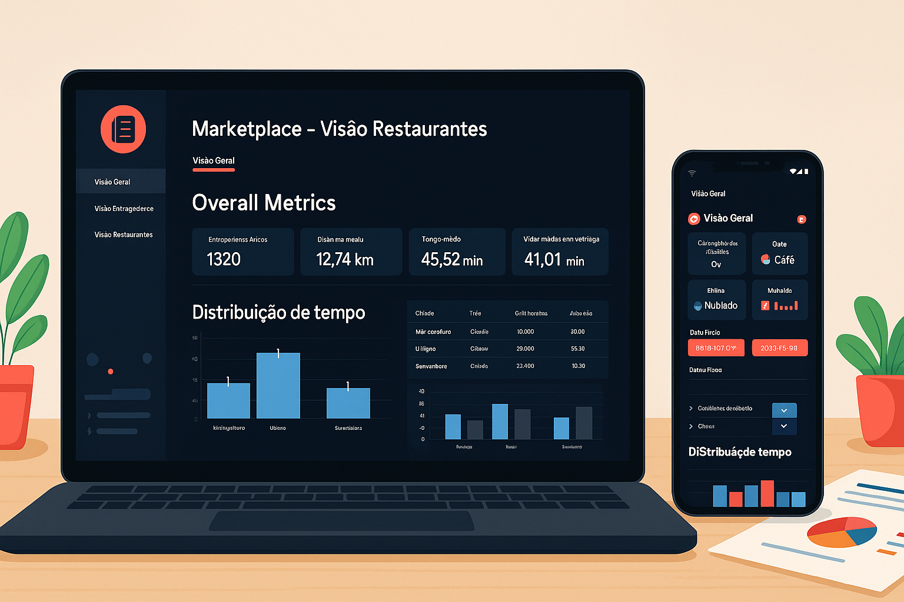
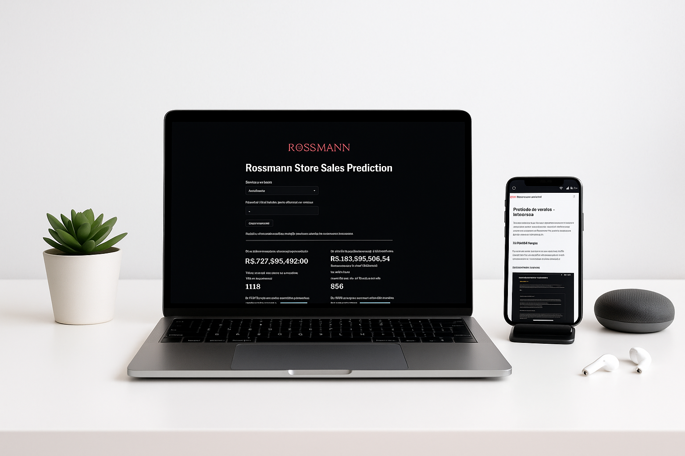

Desenvolvimento de dashboard operacional para Marketplace de Entregas
Tecnologias: Python, Pandas, Plotly, Streamlit, Streamlit Cloud e GitHub
Desenvolvi um painel interativo para um marketplace de entregas na Índia, utilizando Python para tratamento e análise de dados, e Streamlit para criação da interface web. A solução apresenta as principais métricas operacionais da empresa, auxiliando na tomada de decisões estratégicas. O projeto contempla todo o pipeline: desde a manipulação dos dados, construção dos gráficos e indicadores, até a disponibilização do dashboard na web, acessível de qualquer dispositivo.

Previsão de Vendas para rede de farmácias Rossmann
Tecnologias: Python, Pandas, Scikit-Learn, RandomSearch, Flask, Streamlit Cloud e GitHub.
Este projeto tem como objetivo criar um sistema de previsão de vendas para a rede de farmácias Rossmann. A solução desenvolvida permite prever o faturamento de qualquer loja da rede para as próximas 6 semanas, auxiliando na tomada de decisões estratégicas.
Ao longo do desenvolvimento, enfrentei desafios como o tratamento dos dados e a criação de uma API, que até então não fazia parte da minha rotina. Como resultado, construí um modelo de machine learning capaz de realizar as previsões, além de desenvolver um aplicativo no Streamlit que permite que o usuário consulte o faturamento estimado da sua loja e visualize as 10 lojas que mais venderam e as 10 que mais venderão no período.

Dashboard em Power BI
Projeto em desenvolvimento.